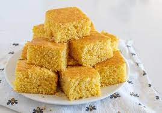

Golden Cornbread
Ingredients
- Flour: This sweet cornbread recipe starts with a cup of all-purpose flour.
- Cornmeal: Opt for yellow cornmeal for this recipe, as it's sweeter than its white counterpart.
- Sugar: Use ⅔ cup white sugar for the perfect amount of sweetness.
- Baking powder: Baking powder acts as a leavener, which means it helps the cornbread rise.
- Salt: A teaspoon of salt enhances the flavors of the other ingredients.
- Milk: Use whole milk, 2% milk, or your favorite alternative milk to add moisture and help create the perfect batter consistency.
- Oil: A neutral oil, such as vegetable oil, keeps the cornbread nice and moist.
- Egg: One egg lends moisture and acts as a binding agent.
Steps
- Preheat the oven to 400 degrees F (200 degrees C). Lightly grease a 9-inch round cake pan.
- Whisk flour, cornmeal, sugar, baking powder, and salt together in a large bowl. Add milk, vegetable oil, and egg; whisk until well combined. Pour batter into the prepared pan.
- Bake in the preheated oven until a toothpick inserted into the center of the pan comes out clean, 20 to 25 minutes.
Nutrition
Servings per Recipe: 12
Calories: 189
Fat: 7g
Carbs: 28g
Protein: 3g
Sodium: 354mg
Sugars: 12g

Reviews
This is THE best cornbread recipe. Look no further!! I did cut down on the sugar a little. (It's still sweet) Delicious with butter and honey on it. Fantastic accompaniment to soup or stew or beans or even makes a great breakfast! - MontanaRecipes
I wanted to make cornbread for our thanksgiving dinner. This was my first attempt at homemade cornbread. The recipe was simple and easy and turned out great. This has been printed and added to my recipe book. Thank you!After reviewing the negative reviews I am concerned they did not read the recipe properly. It calls for 3 1/2 tsp (teaspoons) of baking POWDER (not baking soda).Mine came out beautifully golden brown, moist and did not crumble at all. - Anonymous